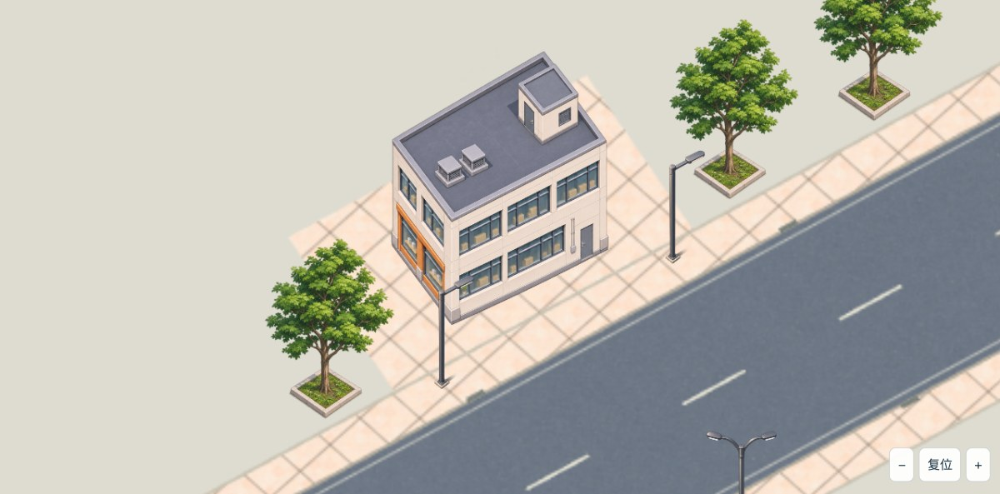

同组8张现用贴图：11.27MB → 2.02MB，约减少82.1%。不含引擎和整个游戏包。
| 元素 | 原生尺寸 | 运行尺寸 | PNG运行大小 |
|---|---|---|---|
| 当前楼 | 1254×1254 | 479×600 | 约396KB |
| 认可树 | 1254×1254 | 290×400 | 约171KB |
| 新近侧路灯 | 1254×1254 | 187×400 | 约43KB |

这是revision-004同一街段的纹理尺寸试样，不是新街区：灯向仍为旧版。裁边/缩图后已同步锚点和世界尺寸，原地图不动；地材网格采样观感有差异。最终极近景/真机性能未验收，不把本次数据显示当整个包体或显存实测。
细长路灯不再占一张方图：查看187×400透明运行图。